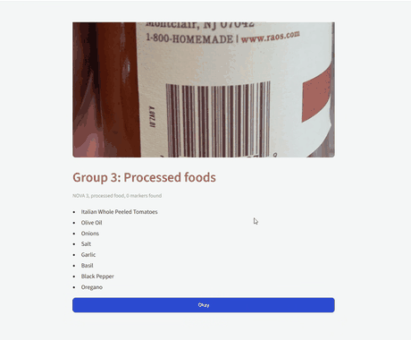

Featured AI app · Computer vision · 2026
Ultra-Processed Food Scanner
Snap a photo of an ingredient list and get its NOVA group (1–4). A vision-language model (Qwen3-VL via Ollama) reads the label, rule-based logic assigns the group, and uncertain scans go to human review. I built the scanner in Python with PostgreSQL and an Expo mobile app, plus a Streamlit web app validated with unit tests.
- 1 Photo of label
- 2 Qwen3-VL reads it
- 3 Rules assign NOVA
- 4 Review if unsure
- Python
- PostgreSQL
- Qwen3-VL
- Ollama
- Streamlit
- Expo
- Unit tests